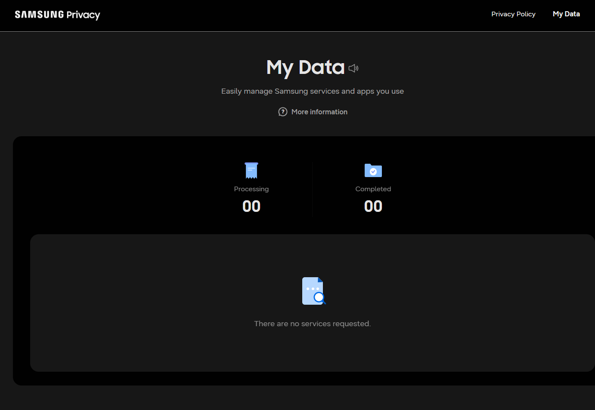
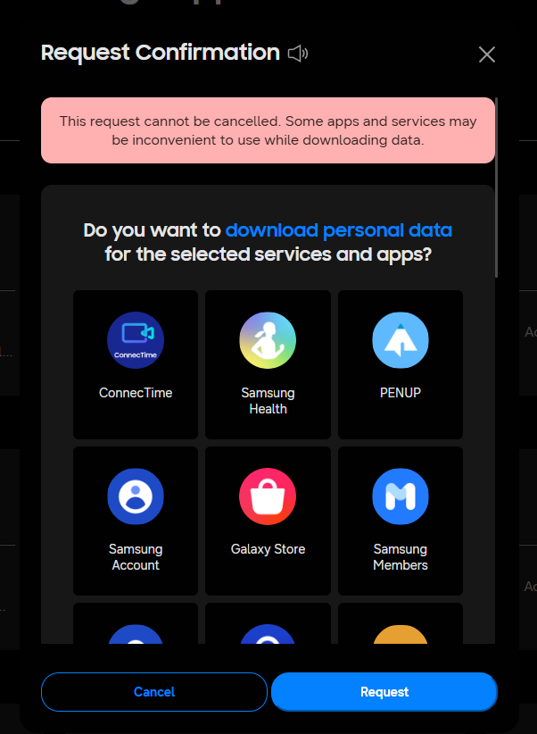

How to export your data from Samsung
Samsung is required to give you a copy of the data it holds about you, including photos, videos, health data and files. The request itself is free, and arrives as one or more .zip files. Typical wait: a few days.
Step by step
Every screenshot below is from Samsung's own pages on 30 July 2026.
-
Open the Samsung Privacy portal
Go to privacy.samsung.com and sign in with the Samsung account whose data you want.

My Data is the whole portal: it counts requests in progress and finished, and lists nothing until you ask for something. -
Choose "Download or delete your data"
Select the option to request a copy of your personal data, then continue to the data request form.
-
Select what to include
Tick the categories you want. Samsung Health is worth taking even if you came for something else - it is the hardest to get elsewhere and the most revealing. What is offered varies by region and by which Samsung services your account has actually used, so the list will not match anyone else's exactly.
-
Submit the request
Confirm the email address the download link should be sent to and submit.

Read the red box before pressing Request. Samsung will not let you cancel this, and it says some apps may misbehave while it runs. -
Wait for the email
Samsung prepares the export and emails a link. There is no progress to watch. If nothing arrives, check the address on the Samsung account rather than the one you assume it uses - an old address on the account is the usual reason the email never appears.
-
Download every part
Press Send my file password first and wait for the email - check spam, it often lands there. Then press Download all files. Samsung sends one archive per service, so expect several: Samsung Health, Samsung Cloud, Samsung Account, Galaxy Store and whatever else the account has used. Keep them together in one folder. The download link expires, so do not leave it a fortnight.
-
Open it and see what is actually in there
Drop the archives into Muletto. The CSV tables become browsable records rather than filenames, any photographs join the same timeline as your other exports, and the What is in here view lists every file it found and how much of it was read - which for an export this varied is the quickest way to see what Samsung actually sent.
-
Open them here and enter the password when asked
Samsung locks every archive it sends and emails the password separately - on the download page, Send my file password mails it to you. Muletto asks for it once and opens all nine, so there is no need to unzip anything by hand. The password is used in the browser and never stored or sent anywhere. If you would rather not paste it, unzipping the archives yourself and opening the folder works just as well.
Worth knowing
Common questions
Why is my Samsung data export password protected?
Samsung encrypts every archive it sends and never puts the password in the same email. On the download page there is a separate Send my file password link that mails it to you. One password opens every archive in the request, and Muletto asks for it once and opens all of them.
How long does a Samsung data export take?
Samsung says up to a month and in practice it is usually a few days. The email arrives when it is ready, and the download link expires, so fetch everything as soon as it lands.
Why did I get nine separate files from Samsung?
Samsung sends one archive per service rather than one file for everything. A service that holds nothing for you produces no archive at all, so the number you get depends on what you have used. Open them together and they merge into one library.
My Samsung export has no photos in it. Where are they?
There are no gallery photographs in a Samsung privacy export, and for a modern Galaxy there will not be. Samsung closed its own gallery sync in 2021 and handed photo backup to Microsoft OneDrive, so your pictures are in a OneDrive account rather than in anything Samsung sends. That arrangement ends on 30 September 2026.
Where is my Samsung Health data in the export?
It arrives inside one of the samsungcloud archives, as folders named in plain English such as Heart Rate and Weight, each holding one CSV. There is a second and completely different route: the Samsung Health app itself has a Download personal data option under Settings, which writes files named com.samsung.shealth and often holds more history. Muletto reads both.
What Muletto does with this export
Once your download arrives, open it in Muletto. The file is read in your browser, on your own machine - nothing is uploaded. You get a breakdown of what is inside, duplicate detection, and a browsable view of your photos, messages, timeline and records.